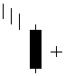

تحلیل تکنیکال
الگوهای کندل استیک ها
Bullish Harami Cross

صلیب هارامی صعودي (هارامی کراس) شباهت بسیاري به الگوي قبلی دارد با این تفاوت که بدنه شمع دوم حتما بصورت
داجی (ستاره) تشکیل شده است این الگو در انتهاي روند نزولی تشکیل می شود و اخطار تغییر روند را صادر می کند.